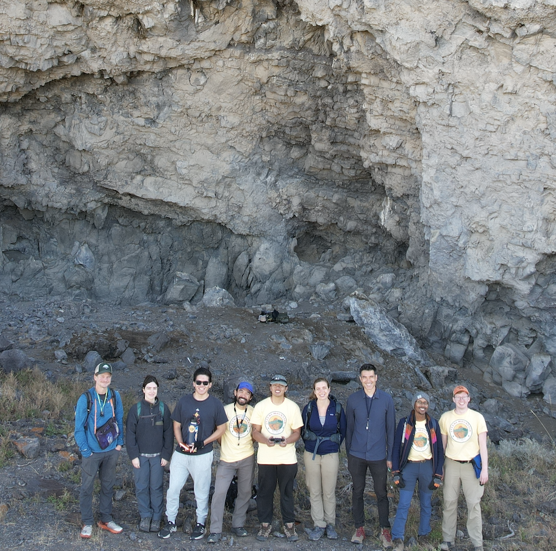

The C2C Project
From Cryptic Carbon to Climate (C2C). Funded by the National Science Foundation and UK NERC to explore links between solid Earth degassing, climate, and life.
Welcome!
We are a group of geodynamicists, petrologists, volcanologists, geochronologists, climate modelers, paleontologists, and educators, pursuing a profound question: how does the solid Earth shape recovery after some of the greatest disruptions in the history of life?
Team
Principal Investigator:
- Ben Black, Rutgers University
Co-PIs:
- Leif Karlstrom, University of Oregon
- Tamsin Mather, University of Oxford
- Benjamin Mills, University of Leeds
- Pedro Monarrez, Virginia Tech
- Lauren Neitzke Adamo, Rutgers University
- Max Rudolph, UC Davis
- Danielle Santiago Ramos, Rutgers University
- Blair Schoene, Princeton University

Publications
Black, B.A., Karlstrom, L., Mills, B.J., Mather, T.A., Rudolph, M.L., Longman, J. and Merdith, A., 2024. Cryptic degassing and protracted greenhouse climates after flood basalt events. Nature Geoscience, 17(11), pp.1162-1168.
News
March 2026: Ben was quoted in Eos about a new paper on Emeishan and climate.
October 2025: A very successful team field season! Photos to be uploaded soon.